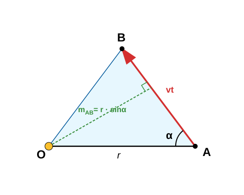
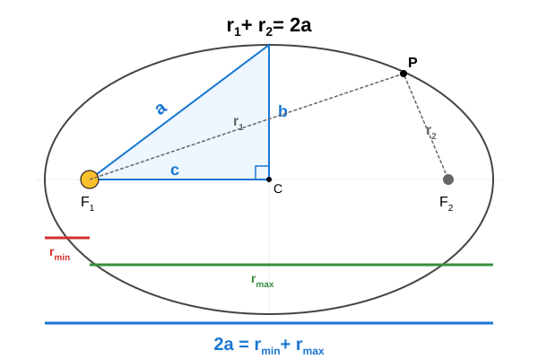

A Nap–Föld átlagos távolság az ún. csillagászati egység (CSE).
Tudjuk, hogy a Föld egy csillagászati egységre van a Naptól, és
keringési ideje 1 év. Mekkora a Mars bolygó keringési ideje, ha átlagos
Naptól mért távolsága
?
A Vénusz bolygó keringési ideje
.
Milyen messze van átlagosan a Naptól?
Itt
-t
csillagászati egységben,
-t
években adtuk meg.
Geostacionárius pályán keringő műholdak a Földdel együtt forognak,
tehát keringési idejük 1 nap. Az első kozmikus sebesség alapján
számítsuk ki, milyen magasságban vannak a felszín felett az ilyen
távközlési műholdak!
A felszín feletti magasság:
A valóságban a
magasságot használják, amely 3 értékes jegyre megegyezik a mi
számításunkból kapott értékkel.
A Nemzetközi Űrállomás (ISS)
magasságban kering a Föld felszíne felett. Számítsuk ki a keringési
idejét! Mekkora a sebessége ebben a magasságban? Hány százaléka ez az
első kozmikus sebességnek?
Ez tehát
-a
az első kozmikus sebességnek. Azért van ilyen közel, mivel a magasság
viszonylag kicsi a Föld sugarához képest, így a keringés nagyon hasonló
ahhoz, amit az első kozmikus sebesség kiszámításakor feltételeztük.
Ebben a magasságban a légellenállás még nem teljesen nulla, ezért
időnként alkalmaznak egy kis meghajtást, hogy az űrállomás ne veszítsen
a magasságából.
A területi
sebesség kiszámítása pályaadatok alapján
A következőkben szükségünk lesz a területi sebesség és a pályamenti
sebesség közötti összefüggésre. Legyen a bolygó kezdetben az
pontban, és igen rövid
idő alatt eljut a
pontba. A Nap az
pontban van. Jelöljük
-rel
a Naptól a bolygóhoz húzott szakasz hosszát! Legyen
az
és
által bezárt,
-nál
nem nagyobb szög.

Területi sebesség és sebesség
kapcsolata
Ekkor:
A területi sebesség:
Ha
,
akkor
,
vagyis a területi sebesség a sugár és a sebesség szorzatának a fele.
Példák Kepler második
törvényére
A Mars legkisebb távolsága a Naptól az ellipszispályáján
(perihélium)
,
a legtávolabbi pontja (afélium) pedig
.
Mekkora a Mars átlagos távolsága a Naptól, vagyis a nagytengely
hosszának fele? Hány csillagászati egység (CSE) ez a távolság? Ha a Mars
keringési ideje
,
akkor mekkora a területi sebesség? Használd az ellipszis
területképletét:
!
Mekkora a bolygó sebessége a Naphoz legközelebbi és a Naptól
legtávolabbi pontokban?

A pálya ellipszis
A területi sebességhez ki kell számítanunk az ellipszis
kistengelyét!
Most már könnyű az ellipszis területét kiszámolni:
Ha ezt elosztjuk a keringési idővel, megkapjuk a területi
sebességet:
A perihélium- és aféliumpontokban a területi sebesség a sugár és a
sebesség szorzatának a fele. Ezekben a pontokban a sugár merőleges a
sebességvektorra.
Így:
Számítsuk ki ugyanazt, mint az első példában, de most a Hold
esetében. A legkisebb Hold–Föld távolság (perigeum)
,
a legnagyobb (apogeum) pedig
.
Mekkora a Hold–Föld átlagos távolság (a nagytengely fele)? Mekkora a
területi sebesség, ha a keringési idő
?
Mekkora a minimális és maximális sebesség? (Használjuk az ellipszis
területére a
képletet!)
Legyen
a Föld,
a Hold tömege.
An ellipszis adatainak kiszámítása:
A területi sebesség:
Tudjuk, hogy:
Feladatok
A Jupiter bolygó átlagos távolsága a Naptól
.
A Föld adatai alapján
(,
)
számítsd ki a Kepler III. törvényének egyszerűsített alakjával
(),
hány földi év alatt kerüli meg a Napot a Jupiter!
Az Eris törpebolygó keringési ideje rendkívül hosszú,
.
Számítsd ki, mekkora az Eris átlagos távolsága a Naptól csillagászati
egységben (CSE)!
Alacsony pályás műhold mozgása: Egy megfigyelő műhold
magasságban kering a Föld felszíne felett.
Mekkora a pálya sugara
(),
ha a Föld sugara
?
Számítsd ki a műhold keringési idejét
()
másodpercben!
Egy üstökös a Nap körüli pályáján a napközelpontban (perihélium)
távolságra van a Naptól, és itt a sebessége
.
Mekkora lesz a sebessége a naptávolpontban (afélium), ha ott a távolsága
?
Egy képzeletbeli bolygó keringési ideje
.
A pályájának kistengelye
,
nagytengelyének fele
.